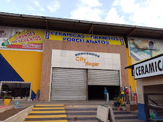
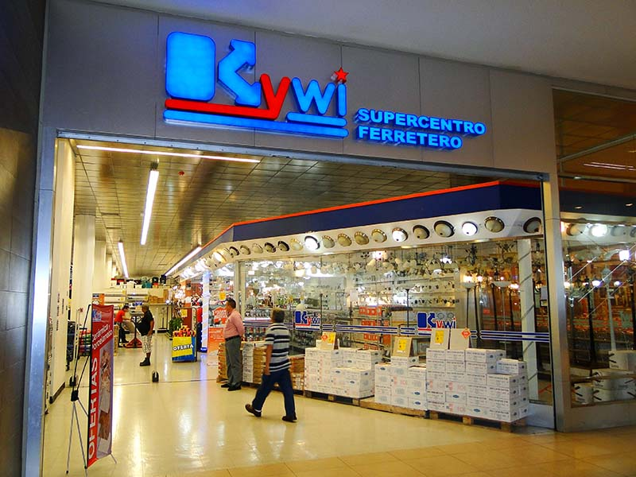

Target Audience
Nearly everyone with internet access who either lives in one of the two covered areas, travels to or through them, or who has access to the internet is the website's target audience. Sambo Chamber takes on the biggest challenges so you can focus on growing your business.
Persona 1:
Persona:
City Hogar - Construction Material
Fictional Name:
Eduardo Torres
Job Title:
Owner
Demographics:
- 44 years old
- Married
- 4 children
- Architect, wants to build his company in other areas around the city
Goals and Tasks:
Wants to make sure that everyone in the area knows about his business.
He also loves to:
- Travel to the beach with his family
- Go to different restaurants with his wife
Environment:
Between his job and his family, he doesn't have much time. With his daughter being IT he knows how to operate a computer and websites. Because he doesn't have much time, he likes websites to be simple and easy to navigate, especially when those websites will help him keep people safer.
Quote:
"My life is extremely busy, sometimes I wish I could do more things."
Persona 2:
Persona:
Kiwi - Construction Material
Fictional Name:
Mary Young
Job Title:
Retired
Demographics:
- 85 years old
- Widowed
- 10 children
- 30 grandchildren
Goals and Tasks:
She loves to plan get-togethers with all the family.
She enjoys:
- Going on short walks (especially with her grandchildren)
- Hosting with friends"
- Singing with her family (though she can't do it as much as she would like to)
Environment:
She took a lesson on computer fundamentals a while ago, but because technology is advancing so quickly, she is still behind. It's virtually a need to have basic websites and apps now.
Quote:
"Try to help me with my phone again; I believe I broke it." "
